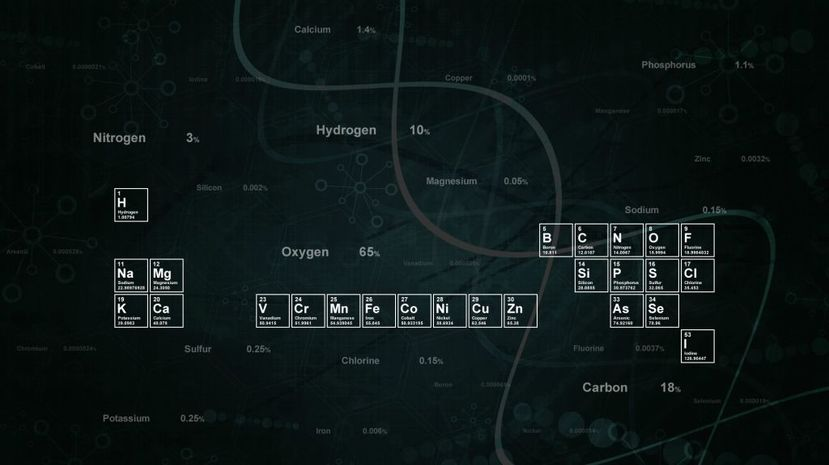

Engineering
Some of the highest paying careers in the world are found in engineering. Engineering is widely considered as one of the most lucrative and in demand career choices, with multiple engineering disciplines and job types, as well as salaries that can exceed 10 lakh per year once the engineer has some experience behind them. Engineers tend to earn in excess of the national average salary and this is expected by some reputable organizations to continue in the future. In fact, Engineering degrees make up 10 of the top 17 highest paid degrees at the time of writing.
Engineering is a very important discipline in the world of today. The importance of this area of specialization by many people is felt all over the world. In the current world we exist in, no country will succeed without adoption of engineering practices. The importance of engineering in our world is numerous. This piece is just an introduction to the topic under discussion because splitting the topic in detail will occupy a large volume of text.
Engineering is a very important discipline in the world of today. The importance of this area of specialization by many people is felt all over the world. In the current world we exist in, no country will succeed without adoption of engineering practices. The importance of engineering in our world is numerous. This piece is just an introduction to the topic under discussion because splitting the topic in detail will occupy a large volume of text.
The Most Trending & Highest Paid Fields Of Engineering

PETROLEUM ENGINEERING:
- Petroleum engineering is a field of engineering concerned with the activities related to the production of hydrocarbons, which can be either crude oil or natural gas.
- The combined efforts of geologists and petroleum engineers throughout the life of a hydrocarbon accumulation determine the way in which a reservoir is developed and depleted, and usually they have the highest impact on field economics.
- Petroleum engineering requires a good knowledge of many other related disciplines, such as geophysics, petroleum geology, formation evaluation (well logging), drilling, economics, reservoir simulation, reservoir engineering, well engineering, artificial lift systems, completions and oil and gas facilities engineering.
- This is an exciting and technically challenging programme that will equip you for a range of careers in the petroleum industry. Ongoing growth in worldwide energy consumption means demand for petroleum engineers is high. Oil companies and service providers are actively recruiting graduates in this area, which remains buoyant despite the economic climate.
ELECTRICAL & ELECTRONIC ENGINEERING:
- Electrical & Electronic Engineering is a fascinating field, and one which could make your time at uni a challenging, enriching and rewarding experience. Just as the world needs its Doctors, Nurses and Teachers, Electrical Engineering is something which we simply couldn't do without.
- If you like the idea of creating electrical systems which could help millions of people on a day to day basis, like the systems used in phones, or computers, then Electrical & Electronic Engineering is your thing.
- Electrical engineers may work on such things as the construction of electric power stations, the design of telecommunications systems, the wiring and lighting of buildings and transport vehicles, the design of household appliances, or the electrical control of industrial machinery. In this manner, electrical engineering plays a vital role in our modern technological society.
- Many electrical engineering jobs are tied to designing, testing and supervising the manufacturing of electrical equipment, but some electrical engineering careers consist of designing electronics schematics for commercial and consumer use.
COMPUTER ENGINEERING:
- This is a relatively new field of engineering and some sources say that there are not enough computer engineers to keep up with demand while other sources say that the job growth for computer engineers will be below the national average.
- Computer engineering can be seen in our day to day lives and has a fast impact on or lifestyles and jobs. Some of the equipment that are in computer engineering are mobile phones, digital video cameras and audio players, microwave ovens, aircrafts, security alarm systems, laser equipment and automobiles.
- In Computer Science you can learn it's language and also learn how to make computer useful.
- Business establishments are constantly perfecting their products and services using computer engineering to deliver and meet the demands for their needs. They have very high budgets for research and design, especially those in the electronic and engineering a job that makes and allows jobs to happen.
- Computer engineering is a discipline that integrates several fields of electrical engineering and computer science required to develop computer hardware and software.
 AEROSPACE ENGINEERING:
AEROSPACE ENGINEERING:- Aerospace engineering is the primary field of engineering concerned with the development of aircraft and spacecraft.
- Aerospace Engineering involves design and manufacturing of hi-tech systems, hence the engineer requires possessing manual, technical and mechanical ability.This discipline specializes in designing, construction, development, testing and maintenance of commercial and military aircrafts and spacecrafts.
- Job opportunities for these engineers are available in Airlines, Air Force, Corporate Research Companies, Defence Ministry, Helicopter Companies, Aviation Companies, NASA and many others.
- Aerospace engineering has its foundation in mechanical engineering, so earning an undergraduate degree in aerospace engineering can lead to a broad range of careers both in flight and on the ground
- Flight vehicles are subjected to demanding conditions such as those produced by changes in atmospheric pressure and temperature, with structural loads applied upon vehicle components.

CHEMICAL ENGINEERING:
- Chemical engineers translate processes developed in the lab into practical applications for the commercial production of products and then work to maintain and improve those processes.
- Chemical engineers work in almost every industry and affect the production of almost every article manufactured on an industrial scale.
- Chemical engineers are among the highest paid professionals in engineering with an average wage of $99,440 per year as of May 2011, according the Bureau of Labor Statistics
- The chemical engineer takes an active role in the main stages of a product life cycle and fosters through his communication skills cooperation with other colleagues working in different fields, such as production & engineering, product management, technical services.
- Chemical engineers can advance their careers from manufacturing plants to technical sales and company management.
MATERIALS ENGINEERING:
- Materials engineers work at developing and testing materials used in the production of industrial and consumer products, as well as working with metals and fabrics, and understanding the uses of each in consumer products.
- Materials engineers develop, process, and test materials used to create a range of products, from computer chips and aircraft wings to golf clubs and biomedical devices.
- They study the properties and structures of metals, ceramics, plastics, composites, nanomaterials (extremely small substances), and other substances to create new materials that meet certain mechanical, electrical, and chemical requirements.
- Entry-level jobs as a materials engineer require a bachelor’s degree. Bachelor’s degree programs include classroom and laboratory work focusing on engineering principles.
- Materials engineers have developed the ability to create and then study materials at an atomic level, using advanced processes to replicate the characteristics of those materials and their components with computers.
CIVIL ENGINEERING:
- Civil engineers are becoming more and more important with time.
- Civil engineers served, serving and will serve as adept builders, environmental stewards, innovators, managers of uncertainty and risk, and leaders in shaping public policy.
- Civil engineers have one of the world's greatest jobs: they build the quality of life. With technical and creative skills, the civil engineers plan, design, construct and operate the infrastructure required to modern civilization, ranging from highways and bridges to water treatment plants and energy efficient buildings.
- A career after civil engineering is highly rewarding. There are jobs that involve supervision, construction, design and analyzes of private as well as public projects, such as dams, highways, canals, water sewages and bridges.
- Civil engineering is a professional engineering discipline that deals with the design, construction, and maintenance of the physical and naturally built environment, including works like roads, bridges, canals, dams, and buildings.
MECHANICAL ENGINEERING:
- Mechanical engineers create and build mechanical devices. They apply the fundamentals of science and math to create practical, useful solutions that the rest of us can use.
- The mechanical engineer needs to acquire particular skills and knowledge. He/she needs to understand the forces and the thermal environment that a product, its parts, or its subsystems will encounter; to design them for functionality, aesthetics, and the ability to withstand the forces and the thermal environment they will be subjected to; and to determine the best way to manufacture them and ensure they will operate without failure.
- Civil engineers have one of the world's greatest jobs: they build the quality of life. With technical and creative skills, the civil engineers plan, design, construct and operate the infrastructure required to modern civilization, ranging from highways and bridges to water treatment plants and energy efficient buildings.
- Now-a-days the scope of mechanical engineering is expanding beyond its traditional boundaries and is more of inter-disciplinary in nature. Mechanical engineers are focusing their attention towards new areas such as nanotechnology, development of composite materials, biomedical applications, and environmental conservation.
- Mechanical engineering is the discipline that applies the principles of engineering, physics, and materials science for the design, analysis, manufacturing, and maintenance of mechanical systems.